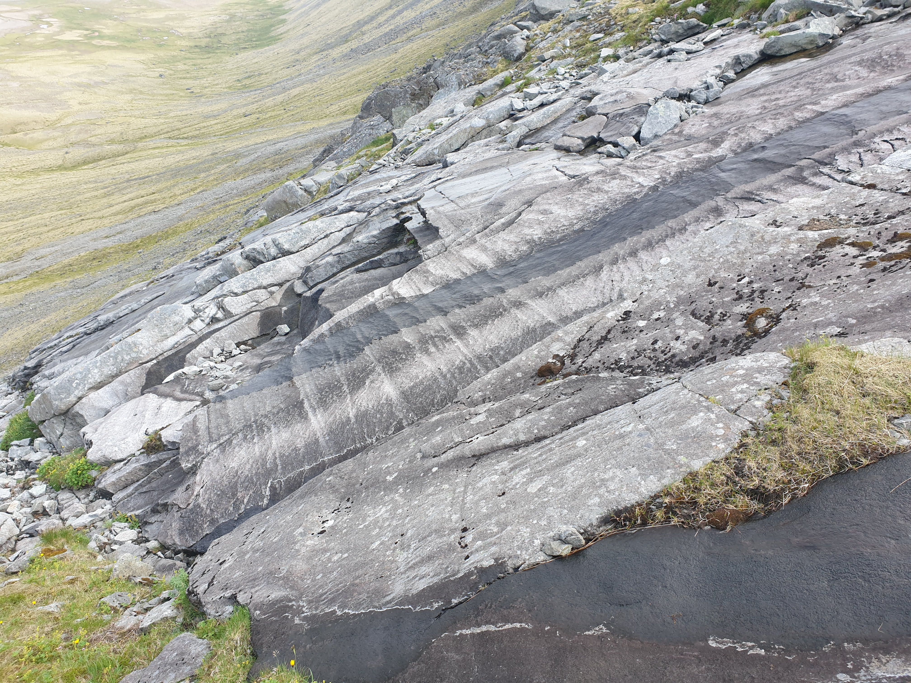

Copied from Steffi's LASI guide:
The gabbro can be divided into at least eight macrorhythmic units whose bases are defined by 2–10 m thick, coarse grained, olivine-bearing melanocratic layers showing increases in Cr2O3 in magnetite and clinopyroxene and Mg# in clinopyroxene and wholerock Mg# relative to underlying units. These melanocratic layers are interpreted as the crystalline products following primitive magma replenishment and mixing with residual magma. Steady decreases in Mg# in clinopyroxene up-section in some macrorhythmic units, coupled with decreases in whole-rock Mg# and Cr2O3 in magnetite, indicate that periods of normal fractionation in some cases followed recharge
Thorarinsson, S. B., & Tegner, C. (2009). Magma chamber processes in central volcanic systems of Iceland: Constraints from the layered gabbro of the Austurhorn intrusive complex. Contributions to Mineralogy and Petrology, 158(2), 223–244. https://doi.org/10.1007/s00410-009-0379-4<\a>